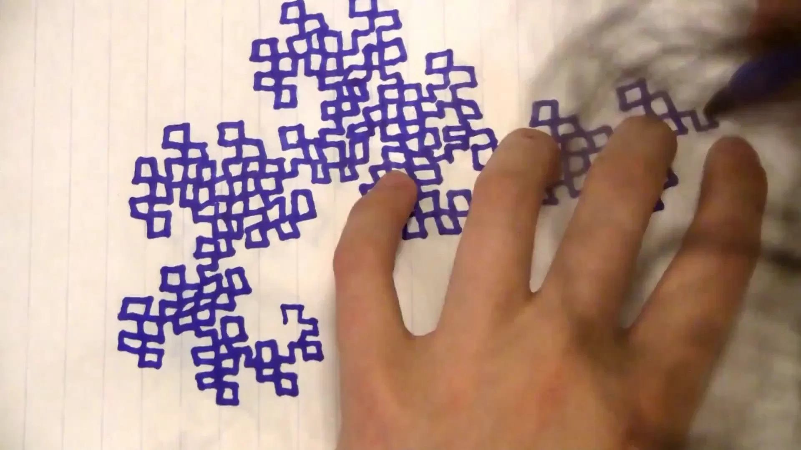

|
| added '25 may 5 Notes on Vanishing Lily Alexandre |
 |
| added '25 apr 16 TALLADEGA: Nascar's Most Feared Track EmpLemon |
 |
| added 2024 jun 14 Twilight ContraPoints |
| the closest online video representation of an ever-unfurling documentary onion. it boundlessly hops through wonderfully deep analyses of cultural touchstones and blueprints, their historical & religious contexts, and why it all matters and how far-reaching it all is. from desire into pre-assumed role binaries into daoism, it is revealing more and more of itself, with each viewing, of why it can be such a useful framework—and the effort taken in its making is uncompromising. written '24 jul 28 |
| added '24 apr 22 Do Chairs Exist? Vsauce |
|  |
| added '24 feb 7 Doodling in Math Class: DRAGONS Vihart |
| the transitory period between individual hosting insanity into corporatized, ever-extracted or insularized internet projects is fascinating to me. of course there's always been creative, personally innovative pieces seeping from all the taps that the internet has let open, in all its forms. but this (not truly, but seen as looking backwards) free-reigned blog fusion of specific interests, school memories, and the blanketing, warm fog of its fuzzy lens, melds everything great that both sides of those internet ages have, truly and organically, created. it's just unique enough, just engaging enough, while still feeling like you can pick up your own little camera and do something too. it was such a beautiful flashpoint, and i hope, as much as i don't wish for it to return (and it couldn't ever really), that it always stay online, preserved in as close to amber as you can manage online. written '24 dec 20 |
| added '24 feb 4 How to Give Yourself a Name MallBat |
| added '23 dec 11 The Bob Emergency: a study of athletes named Bob, Parts I & II | Chart Party Secret Base |
| any Jon Bois documentary could've made it here, but the first i saw of his and his collaborative work at Secret Base was this—and it will always hold a special place in my heart. it's not even simply monumental for making statistics explorations—especially professional sports stats—emotionally meaningful, but it's the fact that both are intertwined perfectly, a marriage of narrative and numbers that still, after countless rewatches, has an eminent affectation. Bois has a preternatural talent for weaving these stories together, and his visual design language has rightfully become iconic. written '24 dec 18 |
(c) MMXXV, all rights reserved.